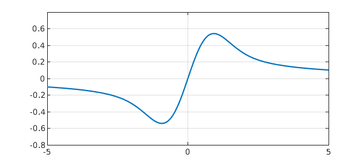
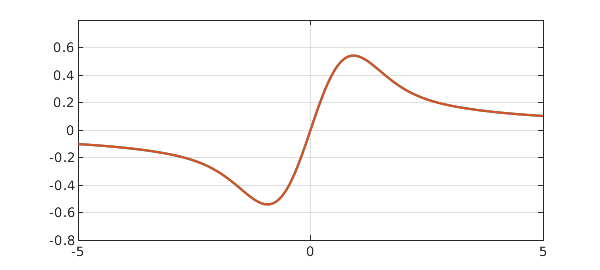

Here is a simple linear ODE boundary value problem:
$$ {dF\over dx} + 2xF = 1, \qquad F(0) = 0. $$
Chebfun can crack this problem in a few lines. Instead of a boundary condition, we will specify an interior point condition.
function DawsonIntegral
LW = 'linewidth'; lw = 2; tic W = 5; H = 0.8; L = chebop(-W,W); L.op = @(x,f) diff(f,1) + 2*x.*f; % ODE L.bc = @(x,f) f(0); % interior point condition f = L\1; toc plot(f,LW,lw), axis([-W W -H H]), hold on, grid on;
Elapsed time is 1.189347 seconds.

The problem can be solved analytically:
$$ F(x) = e^{-x^2} \int_0^x e^{t^2} dt. $$
Users with access to the MATLAB Symbolic Toolbox could also solve it with the following code:
y = sym('y');
f(y) = sym('f(y)');
f = dsolve(diff(f) + 2*y*f == 1, f(0) == 0);
pretty(f);
Equation (2) is known as Dawson's integral or Dawson's function, featuring a dipole structure about the origin. With the Symbolic Toolbox, you could plot the exact solution like this:
fexact = chebfun(@(x) mfun('dawson', x), [-W W]);
plot(fexact, '-.r'), hold off
On my machine, running the last few lines takes about 0.13 seconds.
It's tempting to evaluate Dawson's integral directly using Chebfun.
tic
x = chebfun('x',[0,W]);
fr = exp(-x.^2).*cumsum(exp(x.^2)); % right of x=0
fl = newDomain(-flipud(fr),[-W 0]); % left of x=0
f = join(fl,fr); % must be an easier way to do this!
f = chebfun(f, [-W 0 W]); % is there a better way to do this?
plot(f,LW,lw), grid on
Warning: Function not resolved using 65537 pts. Have you tried 'splitting on'?

How big is the discrepancy between $F$ and $f$? You can find out by running these three lines:
semilogy(abs(f-fexact));
title('error when evaluate F directly');
grid on, hold off
If you do, you'll find that the accuracy is only about 5 digits. It's not difficult to understand the low accuracy if we notice that Dawson's integral as shown in Equation (2) is a product of type $0 \cdot \infty$ as $x$ diverges away from the origin. A standard way to compute Dawson's integral is given in Numerical Recipes [1], where the integral is evaluated using its Maclaurin series [2,3] near the origin and Rybicki's exponentially accurate approximation [4] otherwise. It's very likely that MATLAB's built-in routine adopts this algorithm.
An elegant way to evaluate Dawson's integral as well as several others in the complex error function family has been proposed by Weideman [5]. Here we borrow Weideman's eight-line MATLAB code (very slightly modified) to calculate the integral.
N = 36; tic f = chebfun(@(x) real(sqrt(pi)*(cef(x,N)-exp(-x.^2))/2i), [-W W]); toc
Elapsed time is 0.021531 seconds.
If you have the Symbolic Toolbox...
semilogy(abs(f-fexact)), grid on
function w = cef(z,N) % Weideman's complex error function routine M = 2*N; M2 = 2*M; k = (-M+1:1:M-1)'; % M2 = no. of sampling points. L = sqrt(N/sqrt(2)); % Optimal choice of L. theta = k*pi/M; t = L*tan(theta/2); % Define variables theta and t. f = exp(-t.^2).*(L^2+t.^2); f = [0; f]; % Function to be transformed. a = real(fft(fftshift(f)))/M2; % Coefficients of transform. a = flipud(a(2:N+1)); % Reorder coefficients. Z = (L+1i*z)./(L-1i*z); p = polyval(a,Z); % Polynomial evaluation. w = 2*p./(L-1i*z).^2+(1/sqrt(pi))./(L-1i*z); % Evaluate w(z). end
Weideman's algorithm takes advantage of a slick rational expansion which approximates the Faddeeva function
$$ w(x) = e^{-x^2}+\frac{2i}{\sqrt{\pi}}e^{-x^2}\int_0^x e^{t^2} dt $$
uniformly accurately in the complex plane with only a small number of terms (denoted by $N$ in the code above). With $N = 36$, Dawson's integral is computed accurately within roundoff and it's done roughly ten times faster than the MATLAB Symbolic Toolbox built-in function. Amazing, isn't it? Should we suggest to MathWorks that they rewrite their Dawson's function after an 18-year delay?
end
References
-
W. H. Press, S. A. Teukolsky, W. T. Vetterling, and B. P. Flannery, Numerical Recipes. The Art of Scientific Computing. Third edition. Cambridge University Press, Cambridge, 2007.
-
G. B. Rybicki, Dawson's integral and the sampling theorem. Computers in Physics, vol. 3 (1989), no. 2, pp. 85-87.
-
W. J. Cody, K. A. Pociorek, and H. C. Thatcher, Chebyshev approximations for Dawson's integral. Mathematics of Computation, vol. 24 (1970), pp. 171-178.
-
J. A. C. Weideman, Computation of the complex error function. SIAM Journal on Numerical Analysis, 31 (1994), no. 5, 1497-1518.